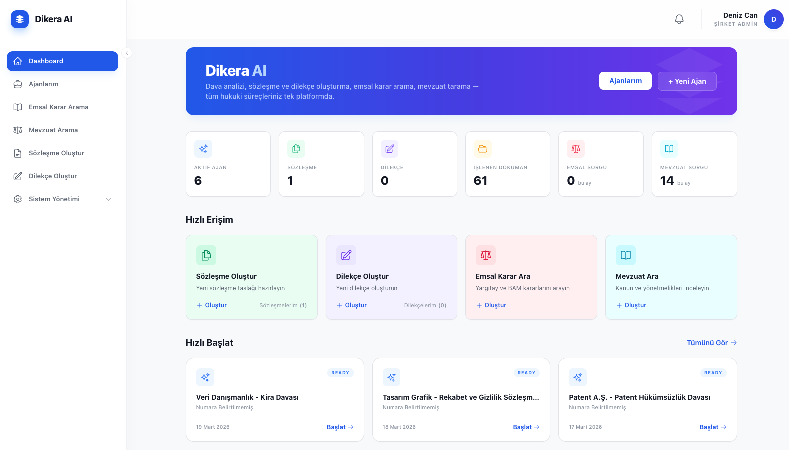
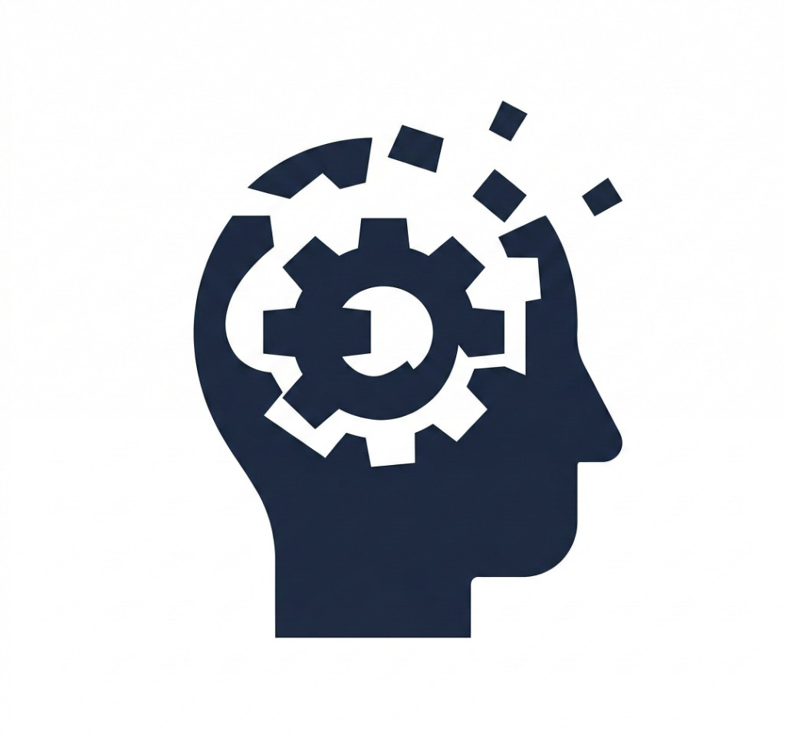

Dava ve Müvekkil Verileriniz Güvende mi?
Yapay zeka destekli hukuk uygulamalarının verilerinizi yurtdışında işlediğini biliyor musunuz? Müvekkillerinizden ve dava dosyasındaki tüm üçüncü taraflardan yurtdışı veri aktarım onayı alıyor musunuz?
Dava dosyalarındaki bilgileri kontrolünüz dışında yurtdışına göndermeyin. Dikera AI ile bu çıkmazdan kurtulun. %100 yasal güvenceye sahip bir yapay zeka hukuk asistanı kullanın.

%100 KVKK ve Baro mevzuatıyla uyumlu altyapı
Dijital Dönüşüm mü, Hukuki İhlal Riski mi?
- KVKK ve Veri Gizliliği
- Siber Güvenlik ve Veri Egemenliği
- Halka Açık Yapay Zeka Kullanımı
- Büyük Dosyalarda Anlam Kaybı
- Davaya Özgü Olmayan Şablonlar
Dijital Dönüşüm mü, Hukuki İhlal Riski mi?
Hukuk süreçleri dijitalleştirerek hız kazanmak mümkün; ancak kontrol kaybı, veri güvenliği ve bağlam hataları yeni risk alanları yaratır. Özellikle büyük dava dosyaları ve yapay zeka kullanımı söz konusu olduğunda, risk yalnızca teknik değil, hukuki ve itibari sonuçlar doğurabilir.
Çözüm Yapay Zeka Yerine Manuel Süreçlere Dönmek Mi?
Uzman değerlendirmesi hukuk süreçlerinin temelidir; buna karşın modern araçların kullanılmaması artan dosya hacmi ve zaman baskısı altında bazı sınırlar görünür hale gelebilir.

İlk Sayfadan Son Sayfaya Aynı Kesintisiz Titizlik
Ofis Genelinde Standartlaşmış ve Objektif Analiz
Uzman Ekiplerin Zamanının Tekrarlayan Operasyonel İşlere Ayrılması
KVKK ve Veri Güvenliği Riski Olmadan Yapay Zeka Mümkün Mü?
south KeşfetDikera AI Nasıl Çalışır?
Dosyalarınızı güvenle yükleyin, Mevzuata göre analiz edin.

Güvenli yükleme ve doküman akışı
Dikera AI ve Geleneksel Çözümler
| Kurumsal Kriterler | Manuel Süreçler | Standart Hukuk AI | Dikera AI |
|---|---|---|---|
| Veri Merkezi | Yerel Arşiv | Yurtdışı (Cloud) | Türkiye (KVKK Uyumlu) |
| KVKK Aktarım Onayı | Onay Gerekmez | 3. Şahıslardan Onay Gerekir ! | Onay Gerekmez |
| Model Eğitimi ve Gizlilik | Uygulanmaz | Riskli (Eğitim Olasılığı) | Asla Kullanılmaz (%100 Gizli) |
| Denetlenebilirlik | Zor / Manuel | Sınırlı (Şeffaf Değil) | Tam Şeffaf / Kayıtlı (Audit Trail) |
| Analiz Kapsamı | Kişisel / Sınırlı | Genel / Jenerik | Dosyaya Özel / Deterministik |
| Erişim Yetki Kontrolü | Dağınık | Standart Kullanıcı Rolleri | Hiyerarşik / Rol Bazlı (RBAC) |
DikEra AISeçili kurumlarla yürütülen erken erişim programı kapsamında çalışmaktadır.
Erken erişime dahil olmak ve bilgi almak için: